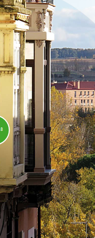

La ciudad de Zamora, con una población de 63.800 habitantes, se extiende por un conjunto de suaves elevaciones ubicadas en la margen derecha del Duero y por la vega del mismo río en ambas márgenes. Se halla rodeada por amplias áreas de cultivo, tanto de secano como de regadío y limita con el ecosistema fluvial del Duero y la pequeña masa forestal del bosque de Valorio, los cuales constituyen los principales espacios naturales de la ciudad. Cuenta en su interior, ade-más, con varias áreas ajardinadas, destacando el parque de León Felipe en su sector suroriental, La Marina, en el centro,y los del Castillo y San Martín de Abajo y El Sillón de la Reinaen la parte más occidental, en el entorno monumental de las murallas, el castillo y la catedral. Otros parques urbanos, más extensos, se encuentran estrechamente vinculados al ámbito ribereño: tal es el caso de los de Las Pallas, Los Tres Árboles y Olivares.
El interior del casco urbano cuenta con el gran atractivo de una numerosa población de cigüeña blanca (ca. 25 pp) que nidifica principalmente en iglesias y otros edificios del casco histórico, a las que hay que sumar una cifra similar que ubica sus nidos en el arbolado de las riberas e islas fluviales del tramo urbano del Duero. Su presencia se extiende a lo largo de casi todo el año pues Zamora alberga una notable población invernante de esta espectacular especie.
